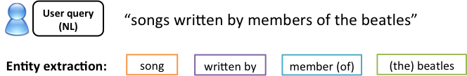
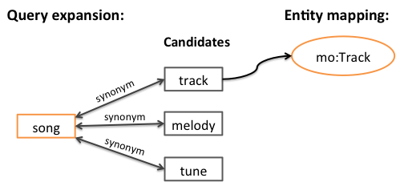
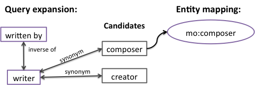
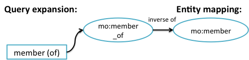
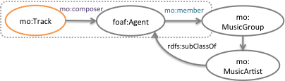
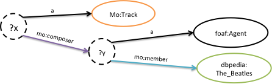

One possible method of input to semantic search is a pseudo natural language query. Entity extraction techniques can then be applied to the text query (a number of entity extraction tools were presented in chapter 3, section 3.9.3).

Figure 37: Extraction of entities from a pseud-natural language query.
By a process termed query expansion, the entities can be mapped to resources within our dataset. For an entity such as ”song” this may involve expanding to a number of candidate synonyms and then attempting to map to these to resources in the dataset.

Figure 38: Mapping the entity “song” to the class Track in the music ontology.
Similarly, the entity “written by” may be mapped to the entity composer in the music ontology.

Figure 39: Mapping the “written by” entity to the composer property.
In some cases there may be a direct mapping between an entity and resource in the dataset. For example, the entity “member (of)” may be mapped to the member_of property in the music ontology. This is the inverse of the member property in the music ontology that is used to define artists as members of groups.

Figure 40: Mapping the “member (of)” entity.
A process of contextual analysis is used to decide between candidate mappings. If we start to piece together the parts of the query into the same subgraph we see that the range of the mo:member property is the class mo:MusicGroup. According to this subgraph we would expect the “the Beatles” to be a music group. We would therefore select this expansion of the entity over musical works, posters and books that also have “the Beatles” as their label.

Figure 41: Piecing together a subgraph for the query.
Once the entity mappings have been established, the pseudo natural language query can then be expressed as a SPARQL query (shown visually below) that retrieves tracks (variable ?x) composed by someone (variable ?y) who is a member of The Beatles. (See chapter 2 for an introduction to SPARQL.)

Figure 42: The SPARQL query (shown visually) for tracks by members of The Beatles.